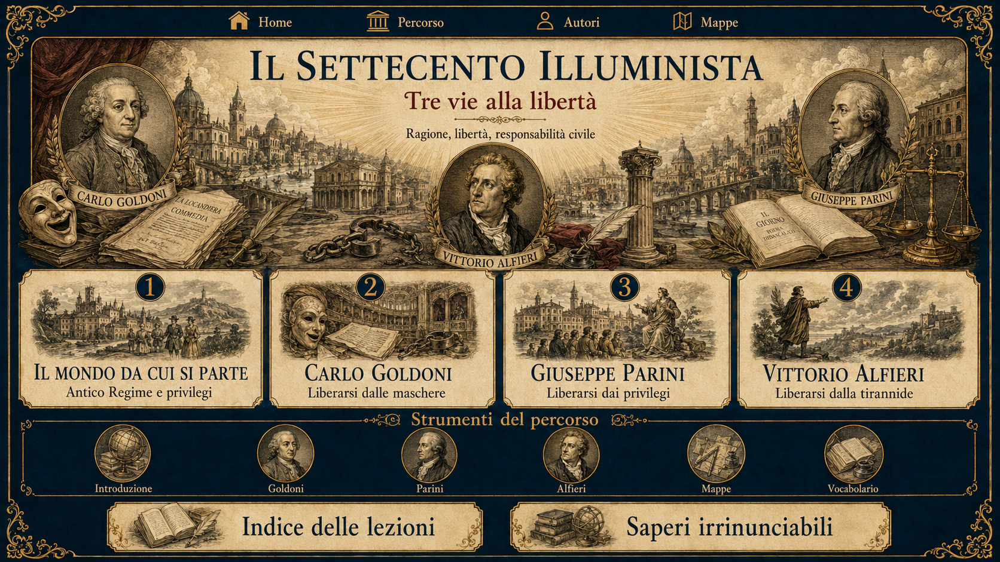

Seleziona un passo, poi evidenzialo.
Il Settecento illuminista — copertina e indice interattivo

Osservare e collegare
Mappe concettuali
Quattro mappe, una sola domanda: dove comincia la libertà?
Conclusione del percorso
La soglia dell’Ottocento
Goldoni libera la persona dalla maschera; Parini libera il valore umano dal privilegio; Alfieri libera la volontà dalla tirannide. Il secolo successivo proverà a trasformare queste esigenze in libertà storica, nazionale e collettiva.